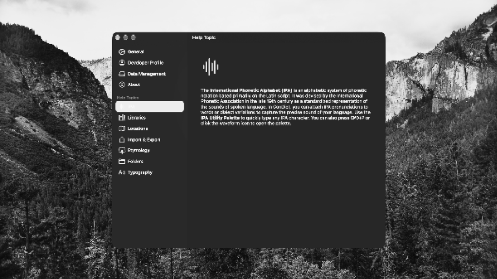
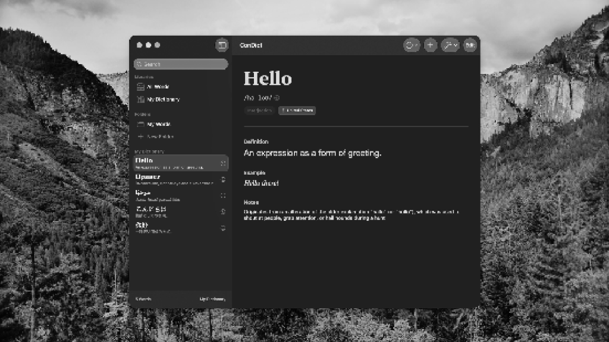
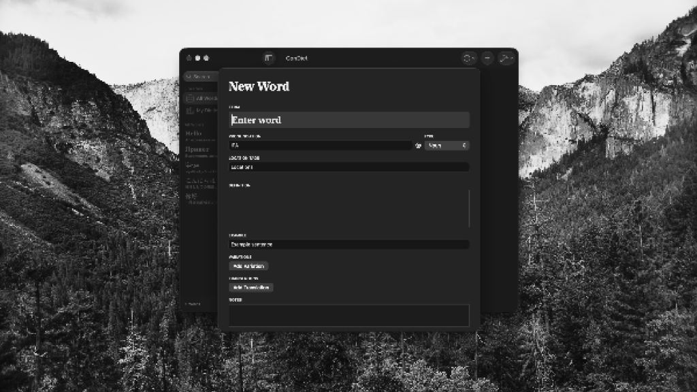

PROJECT / 01 / CONDICT
ConDict
The premier app for conlangers and language learners.

Mission Statement
ConDict is a comprehensive application designed for constructed language creators (conlangers) and language learners. It provides a robust set of tools for managing vocabulary, grammar, and phonology in an intuitive, accessible interface.
Images


